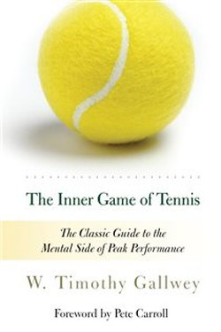

Library › Self-Improvement
The Inner Game of Tennis — Summary & Key Lessons

The Zen classic of performance: the opponent within you is tougher than the one across the net.
📖 OPEN THE FULL INTERACTIVE BREAKDOWN →🌐 Read it in Hindi, Hinglish, Gujarati, Tamil & 22 more languages — free, with audio.
💡 The Big Idea
Gallwey, a tennis coach, discovered that most performance gains come not from better technique but from stilling the inner dialogue — the Self 1 (judging, instructing, criticising) vs Self 2 (the body's natural, capable performer). His method is counter-intuitive: stop trying, watch rather than instruct, let the body learn by attention instead of command. The 'inner game' applies to any skill — writing, coding, music, sales — and its tools (awareness, non-judgemental observation, letting go of the result) are the direct ancestors of modern peak-performance coaching.
🧠 The 7 Key Lessons
Lesson 1: Self 1 vs Self 2
Chapter 1: The Inner Game
Gallwey names the two players inside you: Self 1 — the voice that judges, instructs, criticises and tenses; Self 2 — the natural, capable doer that learned to walk and talk without instruction. Performance drops when Self 1 talks too much. The game is not the opponent across the net; it is the conflict between the selves.
📖 Example: A player who thinks 'keep your wrist straight, bend your knees, follow through' at the serve is slower than one who just watches the ball and swings. Read the full example →
⚡ Do this: Name the inner critic: every time it instructs you mid-action, thank it and return attention to the task itself.
Lesson 2: Quiet the Mind, Not the Body
Chapter 2: Awareness
The primary tool is non-judgemental awareness: observe what is happening without labelling it good or bad. 'Watch the ball' — really see its seams, its bounce, the moment of contact. Attention, not effort, produces the correction: when the body sees clearly, it adjusts automatically. The moment you add 'don't miss!' the command itself creates the miss.
📖 Example: Players told to feel the exact moment of racket-ball contact improved their timing more than players given technique drills. Read the full example →
⚡ Do this: In your next practice session (tennis, code, cooking), pick one thing to observe purely — no evaluation, no instruction.
Lesson 3: Let the Body Learn
Chapter 3: Natural Learning
Gallwey's deepest discovery: the body learns fastest by experience, not instruction. He taught beginners to hit serves by having them swing while watching the ball — no verbal commands at all — and they learned faster than the instructed group. The method: picture the result, feel the stroke, let go, then observe the outcome without judging. Try vs trust: trying hard is Self 1's way; trusting is Self 2's way.
📖 Example: A student who simply mimicked Gallwey's swing rhythm (without being told its mechanics) advanced faster than one who learned step-by-step technique. Read the full example →
⚡ Do this: For one skill, replace 'how do I do this right?' with 'let me watch myself do it and feel the difference.'
Lesson 4: Let Go of the Result
Chapter 4: The Moment
Winning is the enemy of playing well. When you focus on the score, the body tenses and the mind splits — attention leaves the moment. Gallwey's paradox: the player who cares least about the outcome performs best, because they are fully present. The discipline is to accept whatever happens just happened, without penalty — then the next point is clean.
📖 Example: After a missed shot, the amateur replays it with a commentary ('I always miss these'), while the pro has already begun the next point — the same error, different mental cost. Read the full example →
⚡ Do this: After each mistake, give it one neutral sentence ('that one went long') and move on immediately.
Lesson 5: The Inner Game of Work
Chapter 5: Everywhere
The inner game generalises: the same Self 1/Self 2 fight runs in sales calls, public speaking, parenting and creative work. Gallwey's later books apply it to work and stress — the boss is the opponent within. Any environment that removes judgment and increases attention produces growth; any environment with constant criticism shrinks performance. The modern insight that psychological safety drives team performance is the inner game in a spreadsheet.
📖 Example: A team whose manager evaluates less and describes more reports lower stress and higher output — the inner game applied to leadership. Read the full example →
⚡ Do this: This week, give one feedback session in pure description ('I saw X, the effect was Y') with zero evaluation — and notice the response.
Lesson 6: The Quiet Eye
Part 2: The Second Inner Game
Gallwey's simplest technique is also the deepest: watch the ball's seams, its spin, the exact moment of contact. This kind of detail-observation leaves the inner critic nothing to say — attention to the object displaces commentary about the self. The eye teaches the hand; the mind gets out of the way.
📖 Example: Players told to watch the seams stopped overthinking their swing — the correction happened by itself, without a single instruction. Read the full example →
⚡ Do this: In your next practice session, pick one detail to observe purely — and forbid yourself any other instruction.
Lesson 7: The Opponent Is the Partner
Part 3: The Three Inner Games
Gallwey's reframe of competition: the opponent is not the enemy but the partner who shows you your weaknesses — lose to them and you have lost nothing; fail to learn from them and you have lost everything. The great players thank their fiercest rivals for the mirror.
📖 Example: A student who stopped trying to beat his rival and started studying him began winning — the rival had become the coach. Read the full example →
⚡ Do this: Name one 'rival' who mirrors your weakness, and extract one concrete lesson from your last loss to them.
✅ 5-Step Action Plan
- Notice and name the inner critic; return attention to the task.
- Practise one session of pure observation with no instruction.
- Let one skill be learned by feel and feedback — not commands.
- After each mistake: one neutral sentence, then next point.
- Give one evaluation-free feedback to someone this week.
⚠️ When This Doesn't Work
Gallwey's examples are anecdotal and largely untested scientifically; 'letting the body learn' works well for physical and practised skills but cannot replace deliberate practice, study or technique in complex domains. Use it as a complement to training, not a substitute.
💀 The Graveyard Proves It
📷 Syd Barrett — The Creative Genius Who Burned Out Before His Band Made History. Burn: His mind, his career, and his place in the band he founded Read the full case study →
💬 Best Quotes from The Inner Game of Tennis
- “The opponent within one's own head is more formidable than the one on the other side of the net.”
- “Concentration is the essence of all excellence.”
- “When the mind is quiet, the body performs at its best — which is why the best players are described as being 'in the zone'.”
Interactive version: mark lessons as read, listen in your language, share quote cards.